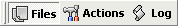
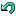

எறும்பு மறுபெயரின் முதன்மையான சாளரம் மூன்று பக்கங்களில் பிரிக்கப்பட்டுள்ளது:
இந்த பக்கங்களை "தாவல்கள்" கருவிப்பட்டி மூலம் அணுகலாம், இது போல் தெரிகிறது:

நீங்கள் வரையறுத்தவுடன் கோப்புகளை மறுபெயரிடுவது மற்றும் அவற்றை எவ்வாறு மறுபெயரிடுவது என்பதை , சொடுக்கவும் "செல்" பொத்தானை. log ஒவ்வொரு கோப்பிற்கும் என்ன நடந்தது என்பதை பதிவு குறிக்கிறது.
இந்த  "செயல்தவிர்" பொத்தான் பழைய பெயர்களுக்கு திரும்பும். இது செயல்தவிர்ப்பதற்கான ஒரு நிலை மட்டுமே உள்ளது, எனவே நீங்கள் மட்டுமே செயல்தவிர்க்க முடியும் கடைசியாக செய்யப்பட்ட மாற்றம்.
இந்த "எப்போதும் மேலே" பொத்தான், சரிபார்க்கப்படும் போது, சாளரத்தை எப்போதும் மற்றவற்றின் மேல் வைத்திருக்க அனுமதிக்கிறது அது செயலில் இல்லாதபோது சாளரங்கள்.
இந்த "விருப்பங்கள்" பொத்தான் விருப்பங்கள் சாளரத்தைத் திறக்கிறது.